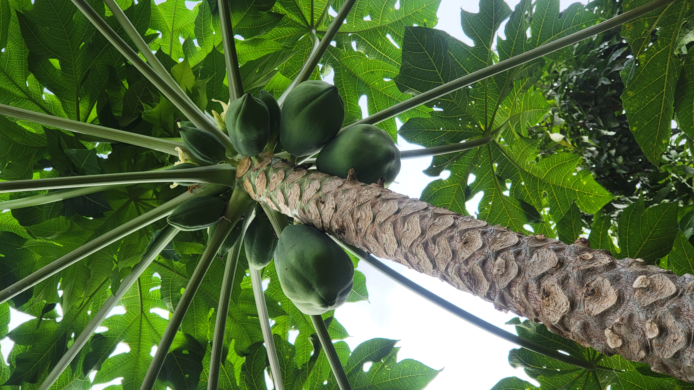
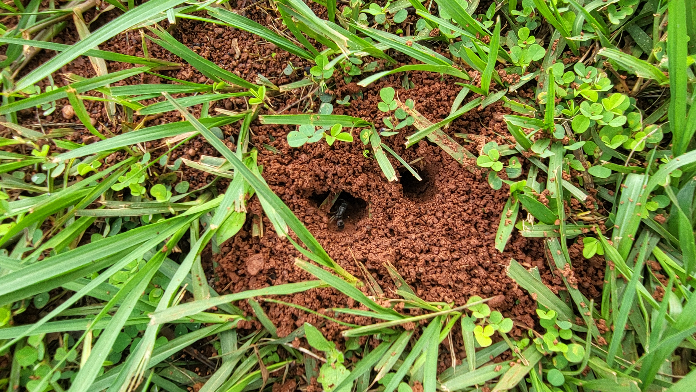
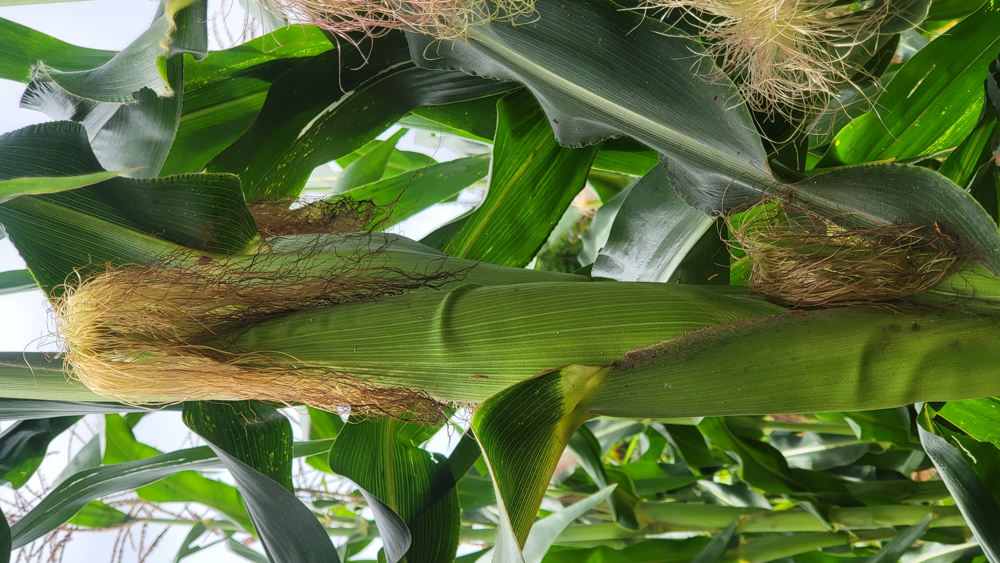
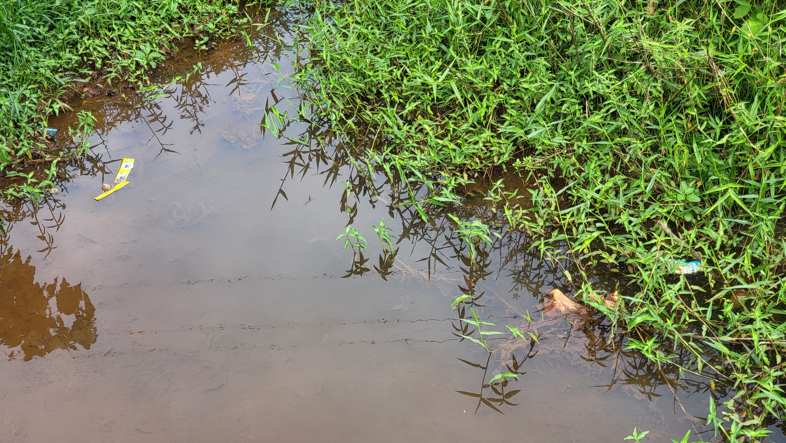

Galerie Photos
La Nature et les Hommes en Images
Explorez nos photos de terrain — forêts, cultures vivrières, pépinières, faune sauvage et ressources en eau du Bassin du Congo.

Piste forestière traversant la forêt tropicale du Bassin du Congo

Vue panoramique sur Yaoundé depuis les collines environnantes

Cabosses de cacao en production sous couvert forestier

Jeunes plants de goyaviers en germination dans notre pépinière

Plantation de bananiers plantains avec collines boisées en arrière-plan

Papayer chargé de fruits vu depuis la base du tronc

Orangers en production dans notre système agroforestier

Corossol (soursop) — Annona muricata — en production

Colonie de fourmis — acteurs essentiels de la chaîne alimentaire forestière

Épis de maïs en pleine maturation dans le champ d'un agriculteur partenaire
Papayer remarquablement productif — résultat de nos techniques d'agroforesterie

Rangs de jeunes plants alignés dans notre pépinière communautaire

Plants en sachets noirs prêts pour la distribution aux agriculteurs partenaires

Agriculteur partenaire de IBCE-RC avec sa récolte de manioc

Racines de manioc — base alimentaire des familles camerounaises

Manguier en production — arbre fruitier essentiel de l'agroforesterie

Vieille souche forestière — habitat pour insectes, champignons et petits animaux

Régime de palmier à huile africain (Elaeis guineensis) — espèce locale précieuse

Mare en zone agricole — zone humide importante pour la faune et l'irrigation

Nids de tisserins (Ploceus sp.) — indicateurs d'un écosystème en bonne santé

Canal d'irrigation gravitaire bordé de taros et cocoyams en production

Ruisseau naturel traversant une zone agricole — source d'eau protégée

Piste de latérite serpentant à travers les collines boisées aux abords de Yaoundé

Yaoundé vue depuis les collines — le contraste entre végétation préservée et urbanisation croissante

Cabosses de cacao en maturation sous le couvert agroforestier de nos parcelles pilotes

Dense semis de plants forestiers en pépinière communautaire, prêts pour la plantation en saison des pluies
Corossol (Annona muricata) — fruit médicinal et nourricier cultivé dans nos pépinières agroforestières

Faune du sol — fourmilière et insecte documentés lors de nos inventaires biologiques sur le terrain

Papayer portant une abondante récolte de papayes — espèce fruitière clé de nos systèmes agroforestiers

Récolte de manioc — base de la sécurité alimentaire des 320 familles partenaires de IBCE-RC
Régime de palmier en pleine maturité — le palmier est l'une des espèces polyvalentes de nos plantations

Pollution des cours d'eau par les déchets — un défi que IBCE-RC combat avec ses programmes de gestion des bassins versants
Nids de tisserins suspendus — indicateurs de la santé des écosystèmes, documentés dans nos zones de suivi écologique

Ruisseau naturel protégé traversant une végétation riveraine luxuriante — résultat de nos actions de conservation des bassins versants
Ces Paysages Méritent d'être Protégés
Chaque photo de notre galerie témoigne d'un écosystème vivant. Rejoignez IBCE-RC pour que ces paysages perdurent pour les générations futures.